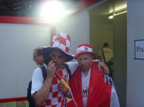
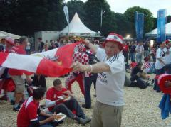
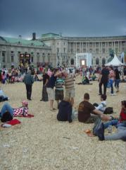

Last day in Vienna
After 5 days here we had our final day in Vienna and it was also G Budds final day on tour before returning home for a big job on the sports areana.
We started the day with a final Jimbo Tour which covered 24 stops and lasted 4 hours. After word had spread about how good the tours were there was a capacity crowd in attendance of 7 including 3 different nationalities. Thje tour was given in English as well as the Austian Jimbo had picked up.
After all the hard work of the tour we headed to the Fanzone for the first of 2 matched - Croatia vs Austria. The place was packed with Croatians who were good craic. We also met an English guy who worked in TV over here and was fasinated by the sticker book story and has promised to follow it tour until we complete it.
During the 2nd game, Germany vs Poland the heavens openned and it lashed down for an hour. every one ran for cover. most of us went back to the hostel - g budd stayed in the fanzone and took cover in a portaloo with 3 croatian blokes for 3 hours - they will remain firm friends.
Vienna has been brilliant. Met loads of great people and had a lot of craic.
Bring on Hungary
Photographs


{kind=link}

{kind=link}

{kind=link}
